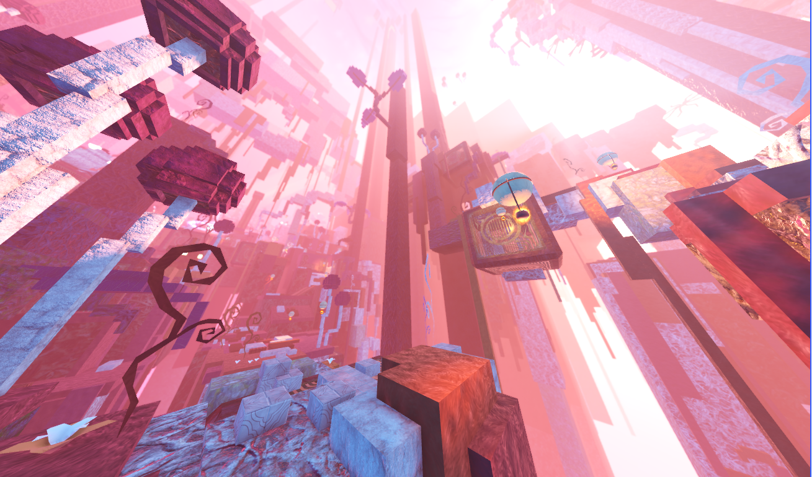
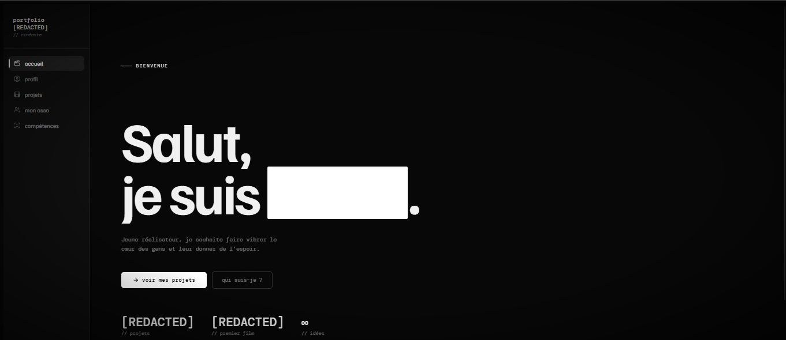
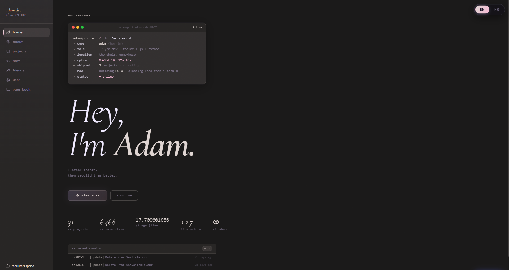
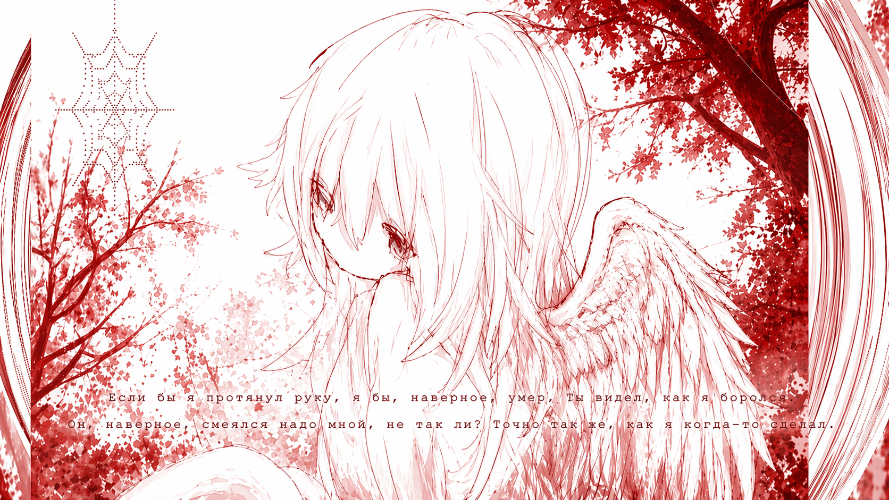

01
Heart of the Unreturned
A parkour world made with a small team. Lots of jumping. Lots of bug fixing.
adam@portfolio ~ $ ./welcome.sh
I break things, then rebuild them better.
Games, code, music. Make yourself at home.

A parkour world made with a small team. Lots of jumping. Lots of bug fixing.

A creative’s portfolio, with a custom CMS so they can make it their own.

My ongoing experiment. A portfolio, a guestbook, and a place to try things.

A hotkey to switch gears. Desktop profiles for work, focus, and everything else.
Small Python automations for the things I don’t want to do by hand.
I’m Adam. You might also know me as Aiden or aexdm. I like figuring out how things work, then making my own version.
I started learning by building. That still feels like the best way to do it: pick something I actually want to make, get a rough version working, and keep improving it.
Most of my projects sit somewhere between web development, game systems, and small tools. I also spend time on art and design. Getting something to feel right matters to me as much as getting it to run.
Looking for the professional version?I wanted a place for the finished projects and the things I’m still figuring out. It changes as I learn. Feel free to look around, or leave something in the guestbook.
A few notes on what I’m making and learning, plus the latest activity from GitHub.
This website. Working on the portfolio, the guestbook, and how it all fits together.
Heart of the Unreturned, a Roblox parkour game. Helping the team fix bugs and refine the experience.
TypeScript, C#, and the back-end fundamentals: authentication, sessions, and API design.
Playing Roblox, listening to music, and experimenting with art and interface design.
Discord status unavailable
Loading recent activity…
Nothing too complicated. These are the tools I keep coming back to.
I’m putting together a list of friends and people whose work I like. There aren’t any links here yet.
Find me on Discord ↗Say hi, share a thought, leave a little trace. I’m glad you stopped by.
Loading messages…
{kind=link}